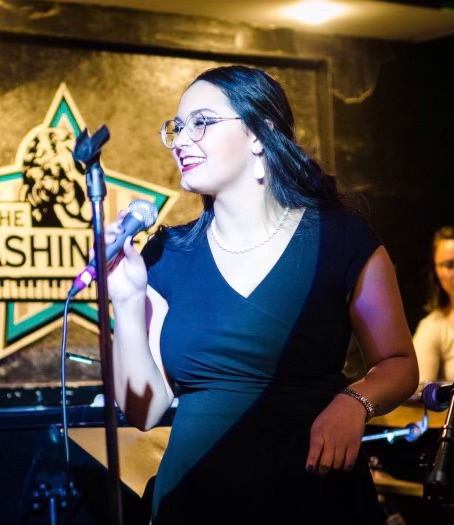
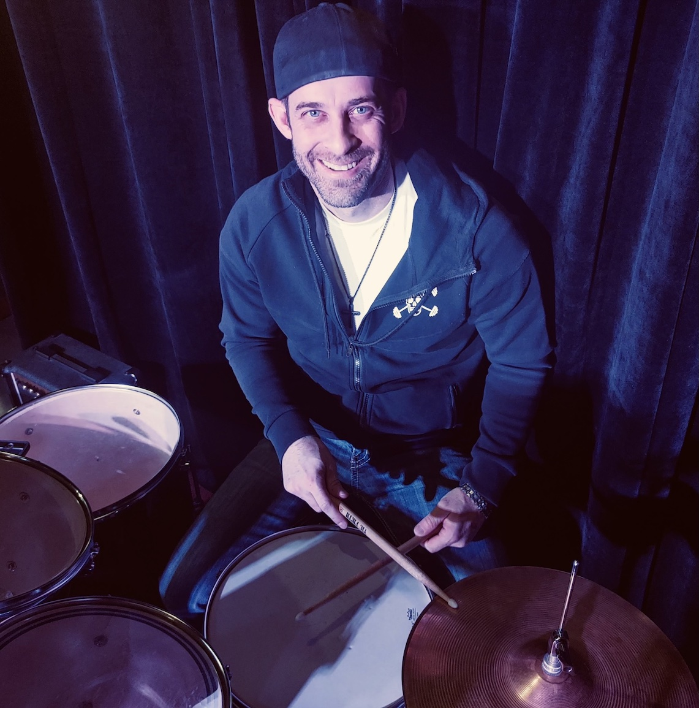

Our Musical Mission
We are Greg and Charlene Johnson. We teach our students the language of music.
We believe all humans are musical. Our studio has a positive, encouraging and fun environment.
We inspire students to find their own voices and be original artists. We tailor the curriculum
to match our students’ individual learning needs and goals. We want our studio to be a welcoming,
safe space for students and families. We are so honored to teach the gift of music and strive to
create a musical community for all of us. Meet the team...
Greg Johnson - Owner, Guitar Coach

I am a performing songwriter specializing in acoustic, electric, and bass guitar. I have recorded multiple albums of original music and traveled the country with my wife, Charlene, on vocals performing our original music. Charlene and I partnered to open The Musician’s Den studio. Our studio is designed to be a welcoming space for musicians of all levels and our goal is to create a place of vibrant musical expression and community.
My passion is to take my love and knowledge of songwriting and music and share it with aspiring guitarists of all ages and skill levels. I like to break down basics into practical information for songwriting and performing. I specialize in many popular music styles including Blues, Rock, Pop, Alternative, Reggae, Metal and Folk.
I work extensively with both new and experienced guitarists. For those new to the guitar, I focus on providing a fun and enthusiastic approach so they can become comfortable with a new instrument. When working with experienced guitarists, we concentrate on new ideas, techniques, and approaches to keep them inspired and to revitalize their approach to the guitar and music in general. My approach as an instructor is to encourage confidence in my students and to work with them to reach their unique musical goals. I work with each student from their current ability level and my lessons are tailored to their musical tastes.
I also enjoy traveling, hiking mountain biking, and golfing with my family! Charlene and I have three children, all of whom love performing. We also have two bunnies named Sweet Pea and Chubs, two cats named Ringo and Cosmo.
Greg Johnson - Owner, Guitar Coach
I am a performing songwriter specializing in acoustic, electric, and bass guitar. I have recorded multiple albums of original music and traveled the country with my wife, Charlene, on vocals performing our original music. Charlene and I partnered to open The Musician’s Den studio. Our studio is designed to be a welcoming space for musicians of all levels and our goal is to create a place of vibrant musical expression and community.
My passion is to take my love and knowledge of songwriting and music and share it with aspiring guitarists of all ages and skill levels. I like to break down basics into practical information for songwriting and performing. I specialize in many popular music styles including Blues, Rock, Pop, Alternative, Reggae, Metal and Folk.
I work extensively with both new and experienced guitarists. For those new to the guitar, I focus on providing a fun and enthusiastic approach so they can become comfortable with a new instrument. When working with experienced guitarists, we concentrate on new ideas, techniques, and approaches to keep them inspired and to revitalize their approach to the guitar and music in general. My approach as an instructor is to encourage confidence in my students and to work with them to reach their unique musical goals. I work with each student from their current ability level and my lessons are tailored to their musical tastes.
I also enjoy traveling, hiking mountain biking, and golfing with my family! Charlene and I have three children, all of whom love performing. We also have two bunnies named Sweet Pea and Chubs, two cats named Ringo and Cosmo.
Charlene Johnson - Owner/Studio Manager, Voice Coach

My greatest passion is sharing my love of music with others as a teacher. I strive to build a unique relationship of trust with every one of my students. My voice studio is positive, fun, encouraging AND delivers singing results. Singers of all ages and abilities are welcome. You’re never too young or old!
As a teacher.. I believe learning in the studio is so much more than singing. I want my students to be well rounded musicians, prepared for whatever musical opportunities come their way. I work WITH students to explore their voices and TOGETHER, we will:
- Find the student’s own unique sound
- Use results-driven techniques to expand vocal range, develop chest, mix, head voice, breath, placement, vocal health and SAFE singing
- Understand how to interpret songs and lyrics
- Learn to choose a song, key, arrangement in their voice range
- Hone performance, mic, audition skills, strategies on the TMD theater stage with live musician accompaniment and learn to work with other musicians professionally
- Study musicianship skills using tonic solfege, music theory, harmony, practical piano, rhythm, sight reading, songwriting, listening, music history and genres
- Dive into the importance of mindset, authenticity and confidence as an artist
As a musician.. in addition to my first loves - singing and songwriting - I play some piano, percussion, flute and ukulele. I have studied, played and sung multiple genres of music from classical to pop/rock all my life. With my husband Greg, we have written, recorded, performed and toured together for many years. We have three kids who all play instruments, sing, perform, or tech for theatre and bands.
Outside of singing and teaching I enjoy going to see live music, theater, gardening and word games.
- NATS - Member of The National Association of Teachers of Singing
- CVTA Certification - Contemporary Voice Teacher Academy with John Henny
- BAST Certification - Contemporary Voice Teacher Training
- Core Singing Course - Private Study with Meribeth Dayme
- UMT - Ultimate Music Theory Advanced Teacher Training
- Music Together Certified Teacher
- Musical Theater Youth Director
Charlene Johnson - Owner/Studio Manager, Voice Coach
My greatest passion is sharing my love of music with others as a teacher. I strive to build a unique relationship of trust with every one of my students. My voice studio is positive, fun, encouraging AND delivers singing results. Singers of all ages and abilities are welcome. You’re never too young or old!
As a teacher.. I believe learning in the studio is so much more than singing. I want my students to be well rounded musicians, prepared for whatever musical opportunities come their way. I work WITH students to explore their voices and TOGETHER, we will:
- Find the student’s own unique sound
- Use results-driven techniques to expand vocal range, develop chest, mix, head voice, breath, placement, vocal health and SAFE singing
- Understand how to interpret songs and lyrics
- Learn to choose a song, key, arrangement in their voice range
- Hone performance, mic, audition skills, strategies on the TMD theater stage with live musician accompaniment and learn to work with other musicians professionally
- Study musicianship skills using tonic solfege, music theory, harmony, practical piano, rhythm, sight reading, songwriting, listening, music history and genres
- Dive into the importance of mindset, authenticity and confidence as an artist
As a musician.. in addition to my first loves - singing and songwriting - I play some piano, percussion, flute and ukulele. I have studied, played and sung multiple genres of music from classical to pop/rock all my life. With my husband Greg, we have written, recorded, performed and toured together for many years. We have three kids who all play instruments, sing, perform, or tech for theatre and bands.
Outside of singing and teaching I enjoy going to see live music, theater, gardening and word games.
- NATS - Member of The National Association of Teachers of Singing
- CVTA Certification - Contemporary Voice Teacher Academy with John Henny
- BAST Certification - Contemporary Voice Teacher Training
- Core Singing Course - Private Study with Meribeth Dayme
- UMT - Ultimate Music Theory Advanced Teacher Training
- Music Together Certified Teacher
- Musical Theater Youth Director
Ethan - Guitar, Bass, Piano Coach

Hi, I'm Ethan and I play guitar, bass, and piano. I love jazz, progressive rock, and funk. I've also been studying to write large orchestrations and other music. I like to teach students by giving them the skills they need to improve on their own as well as focusing on the things that they find fun. I also teach advanced music theory to students looking to play and/or write music at a high level. In my spare time, I love playing video games and cooking.
Tessa - Voice Coach
Hello there! My name is Tessa and I am a singer! I mainly listen to jazz, pop, and indie styles of music but I love finding new songs from any genre. I studied with Charlene and Greg for a little while and they really helped me build my confidence as a musician. I currently go to school at Metropolitan State in Denver as a music major with a focus on vocal jazz. I love working with kids and helping them grow as people and experiencing life through their unique perspective. When I am not singing, going to school, or working, I love being outside, reading, and writing my own music.
Alec - Guitar Coach
I am a passionate musician with ten years experience playing the guitar, bass, ukulele and singing. As a musician, I enjoy playing and singing music to share with others from my unique song repertoire. As a teacher, one of my super powers is my abundance of patience to help a student through the various challenges of learning an instrument. It is a priority to me to connect with my students, keep them inspired and make sure they are growing in both skill and confidence. In my spare time I enjoy playing board games and Dungeon and Dragons.
Tiana - Voice, Bass, Piano Coach

Multi-instrumentalist and Vocalist, Tiana Thakur is a Colorado based musician that prides herself in versatility. During her time at Western Illinois University, where she got a BM in Jazz Studies, she explored a variety of instruments as well as voice, that enabled her to participate in a multitude of projects, bands, and ensembles. Tiana broke barriers with her Senior Recital in which she played 8 instruments. Along with playing and singing from many groups, she has also recorded and released music, and will be releasing more in the upcoming future. There is no genre that she shies away from, as her passion for the art of music is ever growing and continues to push her as a composer, performer, teacher, and person.
Joe - Rock Band Drum Coach

Joe has been playing drums for 20 years. He started teaching and organizing band camps 10 years ago, and teaches all styles and genres. He studied privately under a master drummer, then studied in Nashville for a short time. He has played with local bands, opening for recording artists such as Keith Urban and Blake Shelton, and had two top 100 songs on the national charts. He has enjoyed playing with worship teams in several churches and enjoys making lessons fun and structuring each student’s lessons to their interests and desires.
CALENDAR
2022 Spring Semester
January 2022
1/5: Meet the new TMD Coaches open-house 5-6:30pm
1/10: First day of spring semester private lessons begin
1/17: Rock Bands begin this week
1/24: Group classes begin this week
March 2022
3/6: Pizza karaoke (all-studio) 3:30-5pm
3/14-20: Studio closed for Spring Break
April 2022
4/10: Pizza Jam (all-studio) ages 11/under 3-4pm
4/10: Pizza Jam (all-studio) ages 12+ 4:15-5:30pm
4/22: Friday Night Rock Band dress rehearsal 11/under 6pm, 12-teen 7pm (all students invited to watch)
4/27: Wednesday Night Rockin' Dad Band dress rehearsal 7-8pm (all students invited to watch)
4/29: Friday Night Rock Band showcases
May 2022
5/4: Wednesday Night Rockin' Dad Band showcase 7pm (local venue TBD)
5/6: Friday Night Rock Bands movie night 6pm
5/15: Spring concert (TBD) and last day of semester
June 2022
Summer classes/camps begin
GUITAR SHOP
Sales & Service
The Musician's Den offers great prices on used guitars that have been setup to play great. Repairs and services (such as re-stringing your guitar) are also available from Greg who is a certified guitar repair technician.
TESTIMONIALS
My 13 year old has been taking acoustic guitar lessons with Greg for 11 months. I am amazed at how much she has learned and grown over that time.
- Jenifer F.
Greg is a phenominal teacher. He is intuitive, soulful and knows how to meet his student exactly where they are on the learning curve. He is a natural, and I would recommend him to anyone--any age and any skill level.
- Lisa G.
I have been playing the guitar for over 25 years. Greg was able to connect to my goals and focus on areas that I want to improve in, and I notice progress every week!
- Tim R.
❮
❯